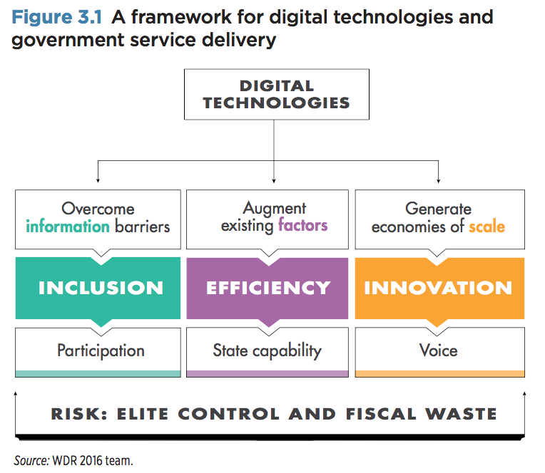
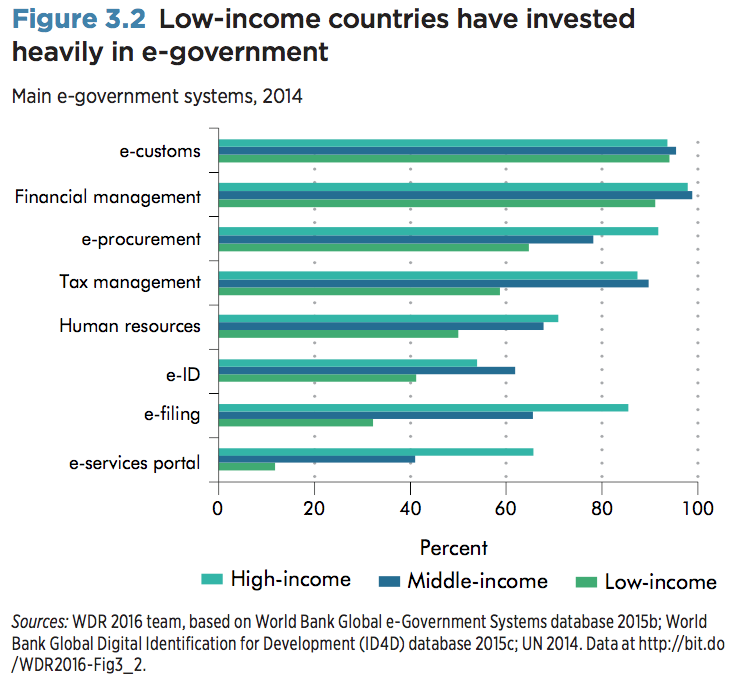
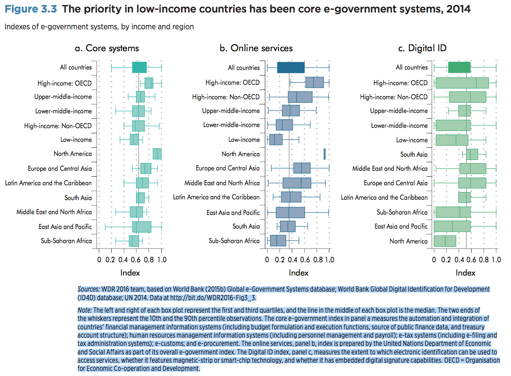

<main role="main">

<article class="prose">
  <header>
    <h2 class="title">CHAPTER 3</h2>
    <h1 class="title">Delivering services</h1>
  </header>
  <div class="smartlink-anchor">
    <div class="prose__content">
      <!-- <span class="smartlink smartlink--footnote smartlink--000"> -->
      <section>
        <p>Have digital technologies made governments more willing and able to deliver services to their citizens? Not yet. Governments have invested heavily in digital technology over the past two decades, and these efforts have made it easier in many countries for businesses to file taxes, and for the poor to get an official identity allowing them to receive welfare payments and vote in elections. Digital technologies have also enabled governments to receive regular feedback from service users, improving service quality. But all too often the successes are isolated—limited to a few activities, sectors, or locales. Many investments in e-government fail to have any impact other than wasting scarce fiscal resources. Digital channels for mobilizing citizens to pressure policy makers to become more responsive have had little effect. And the new technologies have enhanced the capacity of unaccountable governments for surveillance and control. In sum, digital technologies have helped willing and able governments better serve their citizens, but they have not yet empowered citizens to make unwilling governments more accountable.</p>

        <p>Efficient service delivery requires a capable government that can implement policies and spend public resources effectively. <span class="smartlink smartlink--footnote smartlink--000">It also requires an empowered citizenry able to hold politicians and policy makers to account so that governments serve citizens and not themselves or a narrow set of elites.</span> Digital technologies can strengthen government capability and empower citizens through three mechanisms (figure 3.1). They overcome information barriers and promote participation by citizens in services and in elections. They enable governments to replace some factors used for producing services through the automation of routine activities, particularly discretionary tasks vulnerable to rent-seeking, and to augment other factors through better monitoring, both by citizens through regular feedback on service quality and within government through better management of government workers. And by dramatically lowering communication costs through digital platforms, they enable citizens to connect with one another at unprecedented scale, fostering citizen voice and collective action.</p>
      </section>

      <figure>
        <figcaption>Figure 3.1 A framework for digital technologies and government service delivery</figcaption>
        
        <figcaption>Source: WDR 2016 team.</figcaption>
      </figure>

      <section>
      <p>But the impact of these mechanisms on capability and empowerment depends on the strength of government institutions. Institutions are the formal and informal rules that shape the incentives and behaviors of politicians, government officials, and citizens. Strong institutions create incentives for politicians to work toward the public good and for bureaucrats to be accountable to those politicians. Digital technologies, aligned with the incentives of politicians, government officials, and service providers, can thus be highly effective in improving outcomes. By contrast, politicians in clientelist political institutions are largely accountable to a small set of elites and reject digitally enabled reforms that hurt vested interests; instead, they use these technologies for greater control. And patronage-based bureaucracies resist e-government advances that would reduce discretion and rent-seeking. This misalignment between digital technologies and weak or unaccountable institutions creates the twin risks of increasing elite control and wasting scarce public resources on ineffective e-government projects.</p>

      <p>Why do these institutional constraints persist? Digital technologies, particularly social media, have uncovered egregious abuses of public authority and triggered both virtual and physical citizen protests around scandals. But they haven’t sustained collective action around failures of service delivery. Service delivery problems are more difficult to monitor and attribute to specific government officials, and only rarely become salient in flashpoint events that trigger protests—like the excessive use of force by police. And they cannot be improved by one-off actions that change a bad policy or pass a new law. Addressing service delivery failures requires sustained citizen voice through effective offline mobilization by civil society organizations. But in the absence of willing and able governments to partner with, civil society initiatives often remain small, with limited citizen interest or impact.</p>

      <p>The dependence of digital technology on initial institutional conditions, though, varies by service and activity. For services and activities based on more routine tasks that are easy to monitor, digital technologies can improve outcomes rapidly and significantly—even when institutions are relatively weak. In effect, the technology substitutes for the institutions, as with cash transfers, licensing and registration services, and monitoring elections, all much improved by digital technologies in many low-income countries. But for services and activities that require more discretion from workers and are hard to monitor, the quality of institutions is much more important, and digital technologies have an incremental effect. The technology only complements or augments the initial institutions, as with teaching, health care, and organizational management, where digital technologies have an impact only if institutions are strong.</p>

      <p>Given the importance of institutions for service delivery, the policy agenda is to use digital technologies to strengthen institutions. The variation in interaction of institutions and digital technologies by service and activity, and the considerable heterogeneity of institutions even within countries, can guide policy and open many possibilities for service improvements in even the most challenging contexts—in short, for digital dividends.</p>

      <h3>Connected governments</h3>

      <p>The advent of the internet in the mid-1990s triggered the rapid diffusion of e-government systems to automate core administrative tasks, improve the delivery of public services, and promote transparency and accountability. <span class="smartlink smartlink--footnote smartlink--001">By 2014, all 193 member-states of the United Nations had national websites: 101 enabled citizens to create personal online accounts, 73 to file income taxes online, and 60 to register a business.</span> In all, 190 countries had automated government financial management, 179 had automated customs, and 159 had automated tax systems. And 148 countries had digital identification schemes, although only 20 had multipurpose digital identification for such services as voting, finance, health care, transportation, and social security.</p>

      <p>Developing countries have invested more in core government administration systems like financial management, customs, and tax management than in transactional government-to-citizen and government-to-business services like e-filing of taxes and portals that enable citizens to access a variety of services from one website (figure 3.2). <span class="smartlink smartlink--footnote smartlink--002">Policy priorities are also evident in cross-national patterns of the detailed indexes of different e-government systems constructed for this report.</span>  The level of e-government unsurprisingly increases with per capita income, but the gap between high-income and low-income countries is lowest for administrative systems and highest for online services for citizens and businesses, with digital identification systems in the middle (figure 3.3). Fifteen middle-income countries score in the top quartile of administrative e-government systems, with Brazil, Colombia, Mexico, and Peru in the top 10 worldwide, and Nepal, Rwanda, and Uganda scoring highly among low-income countries. India and Pakistan have more advanced digital identification systems than high-income North American countries, pointing to the potential for “leapfrogging” that these technologies offer.</p>
      </section>


      <figure>
        <figcaption>Figure 3.2 Low-income countries have invested heavily in e-government</figcaption>
        
        <figcaption><span class="smartlink smartlink--footnote smartlink--003">Sources: WDR 2016 team, based on World Bank Global e-Government Systems database 2015b;</span></figcaption>
      </figure>

      <figure>
        <figcaption>Figure 3.3 The priority in low-income countries has been core e-government systems, 2014</figcaption>
        
        <figcaption><span class="smartlink smartlink--footnote smartlink--004">Sources: WDR 2016 team, based on World Bank (2015b) Global e-Government Systems database;</span></figcaption>
        
      </figure>

      <section>
        <p>Governments are more intensive users of information technology than firms. Survey data on the use of digital technologies (computers, mobile phones, and the internet) in nonagricultural jobs from 30 countries show that in all but one country, a higher share of public sector workers are in jobs that require frequent use of the technology in their daily work as compared to private sector workers (figure 3.4). This gap is not surprising for developing countries, where most firms are small and in the informal sector.</p>

        <p>For example, more than 60 percent of public sector workers are in jobs that require intensive use of technologies in Bolivia, Colombia, and Kenya, compared with only approximately 20 percent of private sector workers. But the gap persists in 22 of the countries when the public sector is compared only with large private sector firms (those with more than 50 employees). Governments are also more intensive users of technology in high-income countries like Germany, Japan, and the United States.</p>

        <p>Whether this substantial investment in e-government has strengthened state capability and improved outcomes will be explored at length in the next section. One indication of the limited return on these investments is citizen use of e-government services, which has lagged behind supply (figure 3.5, panel a). Even in countries where internet access is not a constraint, as in Europe, citizens use e-government mostly to get information (on average 44 percent of individuals in the European countries for which data are available visited a government website at least once in the past year to get information) and not for transacting with government (only 29 percent returned a form online in the past year). These patterns are also reflected in surveys of citizens in Australia, Canada, and New Zealand—countries that rank 8, 10, and 15, respectively, in the provision of online services. <span class="smartlink smartlink--footnote smartlink--005">The majority of respondents use government websites for information and prefer to use traditional channels like voice calls to undertake transactions such as registering their children for day care.</span></p>

        <p>Both between and within European countries, the use of e-services depends on income. Three times amany citizens use online services in the richest countries than in the poorest, with a similar gap between the highest and lowest income quartiles within countries (figure 3.5, panel b). Within countries, use is unsurprisingly associated with age, education, and urban residence. Businesses are more likely than individuals to use the internet to transact with the government (figure 3.5, panel c), and the use of e-services by business is also less sensitive to income across countries.</p>

        <p>In low-income countries, limited internet access means that mobile phones, not the internet, drive interconnectedness, as chapter 2 discussed. Surveys of the use of digital technologies in 12 African countries reveal that only 5 percent of individuals had used the internet to obtain information from, or interact with, the government, compared to 63 percent of respondents who had used their mobile phones to contact health workers (figure 3.6). Internet-based e-services will therefore be biased against the poor in developing countries. Mobile e-government portals have become more common, nearly doubling from 25 countries in 2012 to 48 in 2014, but still are not on par with internet services.5 More than three-quarters of countries archive information on their websites for education, health, and finance services, but fewer than half send e-mail or Rich Site Summary (RSS) updates, and only a handful send short message service (SMS) updates.</p>
      </section>
    </div>
    
    <aside class="smartlink-wrapper">
      <ol class="footnotes">
        <li class="smartlink-content smartlink-content--000">
          <p>The 2004 World Development Report, Making Services Work for Poor People, underlined that service delivery failures are largely about failures of accountability and weak government implementation capacity, not about poor policies or lack of resources. It showed how relationships of accountability— between citizens and policy makers, between policy makers and service providers, and between citizens and providers—determine outcomes. Unaccountable politicians target policies and public spending to a narrow set of elites rather than providing public goods to benefit the general population. Managers and providers are unresponsive to policy makers and to citizens, often using their positions to extract rents. And poor citizens are unable to organize collectively to pressure policy makers and providers to address service delivery failures. See also Pritchett, Woolcock, and Andrews 2010.</p>
        </li>
        <li class="smartlink-content smartlink-content--001">
          <p>Based on the Online Service Index (OSI), published by the United Nations Department of Economic and Social Affairs. The OSI assesses the range and functionality of government-to-citizen (G2C) and government-to-business (G2B) services offered on the national website of each of the UN’s 193 member states, from simple one-way provision of information, to two-way interaction, to integrated “one-stop” portals. This functionality is based on the standard three-stage classification of e-services in the literature. Informational services are basic websites where citizens can obtain information on government ministries and agencies, access archives, and download forms to apply for public services. Transactional services are chiefly two-way online communications for governments to share information and solicit feedback, and often on government websites that process financial transactions, such as electronic tax filing. Connected services are citizencentric, whole-of-government services. Institutional reform and advanced technologies enable citizens to automatically receive benefits based on life-cycle or economic characteristics. They also allow agencies to easily share data to facilitate service delivery. And they encourage accountability through monitoring and feedback mechanisms. Depending on the intended beneficiary, these services can be classified as government-to-government (G2G), G2C, or G2B (UN 2014).</p>
        </li>
        <li class="smartlink-content smartlink-content--002">
          <p>For this Report, the World Bank has developed two indexes to measure e-government. The Core Systems index measures the automation and integration of core G2G financial and human resource management systems, as well as revenue-related G2B and G2C systems, in 198 countries, drawing on a global dataset of e-government systems developed by the World Bank. The Digital Identification Systems index measures the presence and scope of digital identification systems in government that can serve as a foundational platform technology for myriad G2G, G2C, and G2B services, also drawing on a global dataset of these systems developed by the World Bank. These datasets were prepared by a World Bank team comprising Cem Dener, Sophiko Skhirtladze, Irene H. Zhang, and Doruk Yarin Kiroglu.</p>
        </li>

        <li class="smartlink-content smartlink-content--003">
          <p>World Bank Global Digital Identification for Development (ID4D) database 2015c; UN 2014. Data at <a href="http://bit.do/WDR2016-Fig3_2" target="_blank">bit.do/WDR2016-Fig3_2.</a></p>
        </li>

        <li class="smartlink-content smartlink-content--004">
          <p>World Bank Global Digital Identification for Development (ID4D) database; UN 2014. Data at <a href="http://bit.do/WDR2016-Fig3_3" target="_blank">bit.do/WDR2016-Fig3_3</a>.</p>
          <p>Note: The left and right of each box plot represent the first and third quartiles, and the line in the middle of each box plot is the median. The two ends of the whiskers represent the 10th and the 90th percentile observations. The core e-government index in panel a measures the automation and integration of countries’ financial management information systems (including budget formulation and execution functions, source of public finance data, and treasury account structure); human resources management information systems (including personnel management and payroll); e-tax systems (including e-filing and tax administration systems); e-customs; and e-procurement. The online services, panel b, index is prepared by the United Nations Department of Economic and Social A airs as part of its overall e-government index. The Digital ID index, panel c, measures the extent to which electronic identification can be used to access services, whether it features magnetic-strip or smart-chip technology, and whether it has embedded digital signature capabilities. OECD = Organisation for Economic Co-operation and Development.</p>
        </li>
        <li class="smartlink-content smartlink-content--005">
          <p>Reddick and Turner 2012; Gauld, Goldfinch, and Horsburgh 2010.</p>
        </li>

      </ol>
    </aside>
  </div>  
  
</article>

  


</div>

</main>